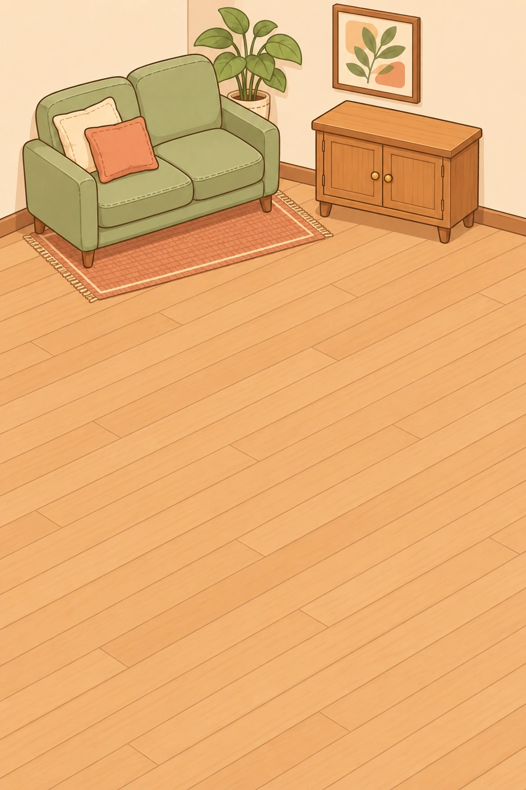

正在准备房间…
·
测试帮助，不播放广告
本局有效，免费重开还原。免费路线也能获得三星；帮助成绩单独记录。
点物件即可自动分类，开放的两只箱子会直接接走它；还没有箱子的物件先放在五个暂存位。
新分类开放后，会自动接走匹配的暂存物。五个格子放满仍可继续收当前分类，第6件不匹配的物件放不下，这局就结束了。
第三只箱子已上锁，本次只能使用另外两只箱子。
被压住的物件会点名上面的遮挡者。可以随时免费重开；桌面关可尝试更省位置的路线。本机最佳与声音偏好仅存在浏览器，不会上传。
随时选关、免费重开；切关会清空当前这局。通关标记仅保留在本次打开期间；每关免费与帮助最佳星级分别保存在本机。
点一下开始声音
人声播放时，音乐和音效会自动放轻。
设置自动记住。点“开始收拾”进入房间时开启声音；切到后台暂停，回来不补播旧人声。
音乐：Carefree — Kevin MacLeod (incompetech.com) · CC BY 4.0。本版剪辑为40秒循环，调整接缝与音量。素材说明
没有倒计时，也没有重开成本。谢谢你给家留了一点轻松。
给今天，留一点轻松。
将从第一关重新开始，当前局面和完成关标记将重置。已有最佳星级与声音设置保留。